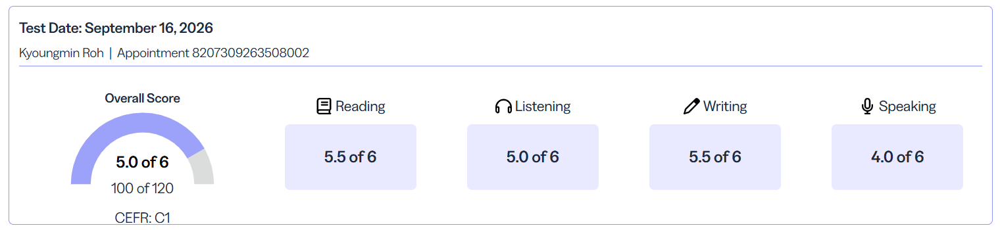

LANGUAGE PROFICIENCY
TOEFL iBT
Test date:
Overall 5.0 / 6 · 100 / 120 · CEFR C1
Reading 5.5 · Listening 5.0 · Writing 5.5 · Speaking 4.0 (out of 6)

View full-size score report ↗08 / CERTIFICATE
Language proficiency and certificates.
LANGUAGE PROFICIENCY
Test date:
Overall 5.0 / 6 · 100 / 120 · CEFR C1
Reading 5.5 · Listening 5.0 · Writing 5.5 · Speaking 4.0 (out of 6)

View full-size score report ↗